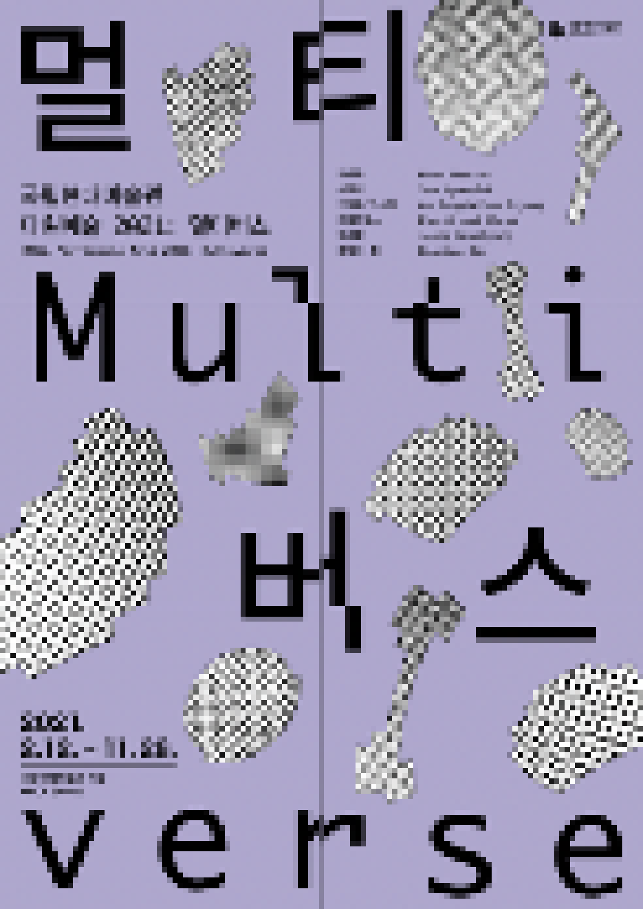

> title
국립현대미술관 다원예술 2021: 멀티버스
> content
《국립현대미술관 다원예술 2021: 멀티버스》는 기술 발전으로 급격하게 변화하는 사회의 양상을 다양한 형식의 예술과 기술을 통해 질문하고 사유해보는 시도이다. 이 프로젝트는 최근의 기술을
적극적으로 활용하거나 비판적으로 접근하면서 이러한 기술과 동시대 예술이 제안하는 시각성, 시간성, 신체성, 공간성 등을 실험해 볼 예정이다. 총 6팀의 작가가 참여하며 실제와 유사한 지각
경험을 제공하는 최근의 몰입형 기술(VR), 인간의 물리적 운동 능력을 대체하려는 로봇, 우리의 학습과 추론 능력을 뛰어넘는 인공지능(AI) 그리고 스스로 주행 환경을 인지하고 주행을
계획하고 제어하는 자율주행 기술(LiDAR 센서나 자율주행 알고리즘) 등을 활용하여 신작을 제작한다. 프로그램의 키워드는 '멀티버스(Multiverse)'로 우리 우주 외에 여러 우주가
실제로 존재한다는 다중우주론을 뜻한다. 모든 가능한 우주를 생각해 보는 멀티버스는 '실체'와 '인식'에 대한 질문이자, 세계에 대한 관점 변화를 의미한다.
공연관람 안내 및 유의사항
⚫ 모든 퍼포먼스와 전시는 사전 예약제로 운영: 홈페이지 사전 예매 후 공연 당일 현장에서 미술관 통합관람권 구매
퍼포먼스
홈페이지 <전시관람 예약> 선택 후 <다원예술 2021 프로그램> 예약에서 진행
전시
홈페이지 <전시관람 예약> 선택 후 <[서울] 전시관람 예약> 예약에서 진행
⚫ 퍼포먼스 1일 전 자정까지 예약 및 취소 가능
⚫ 퍼포먼스는 만 15세 미만 관람 불가
⚫ 코로나 19로 인해 프로그램 일정과 장소 등이 변동될 수 있음: 자세한
내용은 홈페이지를 참조 (mmca.go.kr, multi-verse.kr)
국립현대미술관 다원예술은 하나의 관점, 정형화된 형식으로는 더 이상 설명할 수 없고 규정할 수 없는 예술에서의 초과와 불일치를 드러내는 과감한
시도이다. 동시대 예술이 표출하는 이 복잡한 양상은 우리에게 익숙한 예술에서 벗어나 전혀 다른 감각으로 예술과 사회를 바라볼 것을 요구한다. 국립현대미술관
다원예술은 자유롭게 도전하고 끊임없이 질문하며 날카롭게 탐구하는 가능성의 장소이다.
